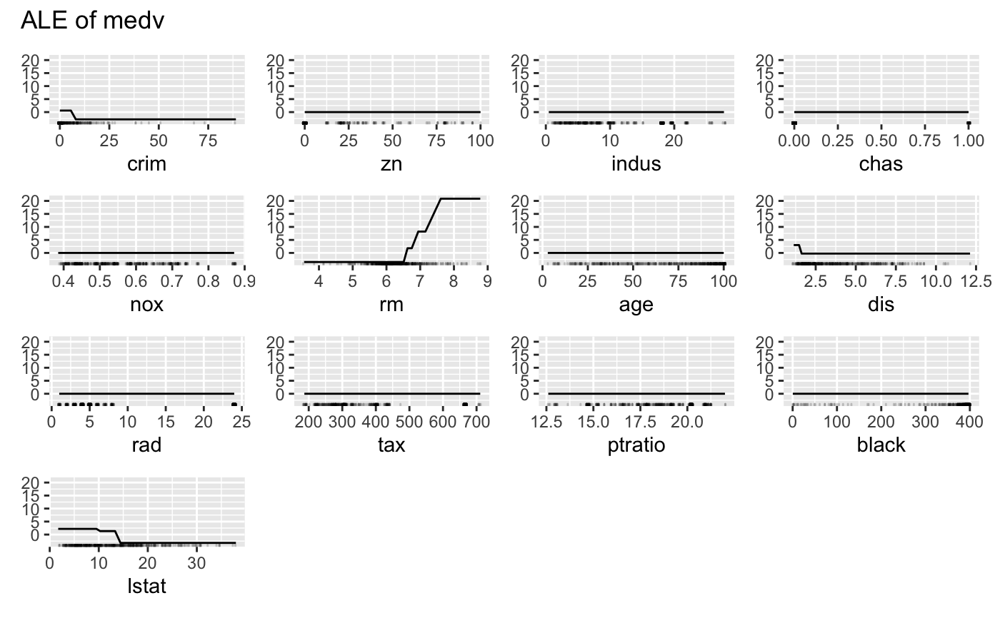

FeatureEffects computes and plots feature effects
of multiple features at once.
FeatureEffects computes the effects for all given features on the model
prediction. FeatureEffects is a convenience class that calls FeatureEffect
multiple times. See ?FeatureEffect for details what's actually computed.
Only first-order effects can be computed with the FeatureEffects interface. If you are interested in the visualization of interactions between two features, directly use FeatureEffect.
Parallelization is supported via package future. To initialize future-based parallelization, select an appropriate backend and specify the amount of workers. For example, to use a PSOCK based cluster backend do:
future::plan(multisession, workers = 2) <iml function here>
Consult the resources of the future package for more parallel backend options.
Apley, D. W. 2016. "Visualizing the Effects of Predictor Variables in Black Box Supervised Learning Models." ArXiv Preprint.
Friedman, J.H. 2001. "Greedy Function Approximation: A Gradient Boosting Machine." Annals of Statistics 29: 1189-1232.
Goldstein, A., Kapelner, A., Bleich, J., and Pitkin, E. (2013). Peeking Inside the Black Box: Visualizing Statistical Learning with Plots of Individual Conditional Expectation, 1-22. https://doi.org/10.1080/10618600.2014.907095
iml::InterpretationMethod -> FeatureEffects
grid.size(numeric(1) | numeric(2))
The size of the grid.
method"ale" for accumulated local effects,
"pdp" for partial dependence plot,
"ice" for individual conditional expectation curves,
"pdp+ ice" for partial dependence plot and ice curves within the same plot.
effects(list)
Named list of FeatureEffects.
features(character())
The names of the features for which the effects were computed.
center.atnumeric
Value at which the plot was centered. Ignored in the case of two
features.
Inherited methods
new()Create a FeatureEffects object
FeatureEffects$new( predictor, features = NULL, method = "ale", center.at = NULL, grid.size = 20 )
predictorPredictor
The object (created with Predictor$new()) holding the machine
learning model and the data.
features(character())
The names of the features for which to compute the feature effects.
method'ale' for accumulated local effects,
'pdp' for partial dependence plot,
'ice' for individual conditional expectation curves,
'pdp+ice' for partial dependence plot and ice curves within the same plot.
center.at(numeric(1))
Value at which the plot should be centered. Ignored in the case of two
features.
grid.size(numeric(1) | numeric(2))
The size of the grid for evaluating the predictions.
feature(character(1) | character(2) | numeric(1) |
numeric(2))
The feature name or index for which to compute the effects.
clone()The objects of this class are cloneable with this method.
FeatureEffects$clone(deep = FALSE)
deepWhether to make a deep clone.
# We train a random forest on the Boston dataset: library("rpart") data("Boston", package = "MASS") rf <- rpart(medv ~ ., data = Boston) mod <- Predictor$new(rf, data = Boston) # Compute the accumulated local effects for all features eff <- FeatureEffects$new(mod) eff$plot()if (FALSE) { # Again, but this time with a partial dependence plot eff <- FeatureEffects$new(mod, method = "pdp") eff$plot() # Only a subset of features eff <- FeatureEffects$new(mod, features = c("nox", "crim")) eff$plot() # You can access each FeatureEffect individually eff.nox <- eff$effects[["nox"]] eff.nox$plot() # FeatureEffects also works with multiclass classification rf <- rpart(Species ~ ., data = iris) mod <- Predictor$new(rf, data = iris, type = "prob") FeatureEffects$new(mod)$plot(ncol = 2) }